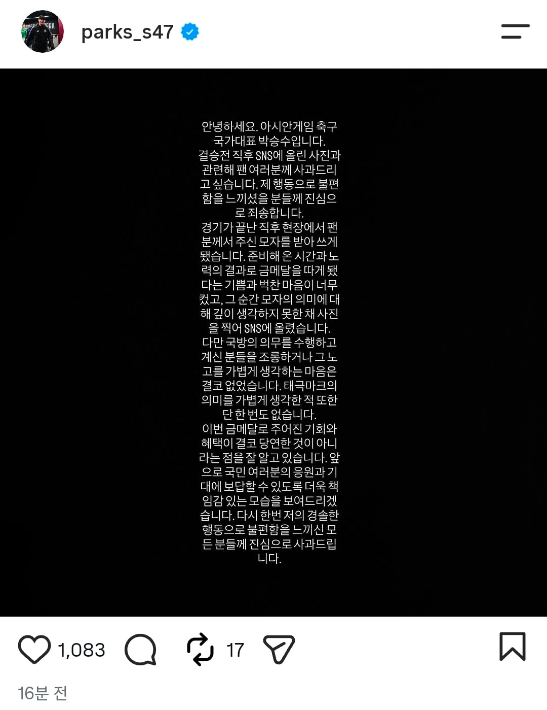

전역모 논란 박승수 사과문
댓글
심심한데 잘걸렸다 ㅋㅋㅋㅋ 그러게 깝치래? 비난 달게 받아라 ㅋㅋㅋ
없애자
애초에 사과문을 작성할 일을 안 만들었으면 사과문 쓸 일도 없고, 금메달 땄으니 금의환향이라고 환영해주고 축하해줄 문제인데, 기자가 미끼 던져주니깐 좋다고 낚여놓고선 이제와선 어쩌라는건지ㅋㅋㅋ
네이버댓글에 보니깐 편들어준다고 '애들이 어려서 잘 모를 수도 있는거니 너무 비난하지 말자.' 고 적힌거 봤는데, 나이가 애새끼나이도 아니고 성인나이인데 뭔 씹ㅋㅋㅋㅋ
이래서 한국에선 사과하면 사과한 놈만 병신되는거임ㅋㅋ 한국에선 사과를 하면 스스로 잘못을 인정한게 되니까 더 조롱하고 욕해도 된다고 생각하는 병신들 때문에 연예인들도 그렇고 사과를 안하게 됨 오히려 핑계 대고 시간 질질 끌어서 서서히 잊혀지게 하는게 현명한 선택임 냄비근성 민족답게 ㅋㅋㅋㅋㅋ 무슨 죽을죄를 진것도 아니고 어린나이에 말실수 한번 한것뿐인데 인터뷰 통해서도 사과하고 저렇게 사과문도 올리면 사과를 받아주고 후하게 넘어가주기도 해야하는데 어떻게든 사람 자살하는 꼴볼라고 끝까지 바짓가랭이 붙잡고 끓어내릴려는 꼬라지 보고있자니 이 나라는 경제만 발전 한거지 민족성은 존나 하위권에 머물러있는듯ㅋㅋㅋㅋㅋㅋ
감성주점메뉴판처럼 쓰는건 또 처음보네
잘쓰네?
체육이나 문화분야 말고도 다른 분야에서 독보적인 위치에 있는 엔지니어나 과학자들도 많을텐데, 다른사람들도 존나게 노력해서 이루는 건데 시벌
'준비해온 시간과 노력의 결과로'
저 새끼들 사과문 보면 항상 이런 표현이 들어가있더라. 저 새끼들 대가리에는 지금 군면제는 자기 노력에 의한 정당한 보상이라는 생각이 박혀있다니까?